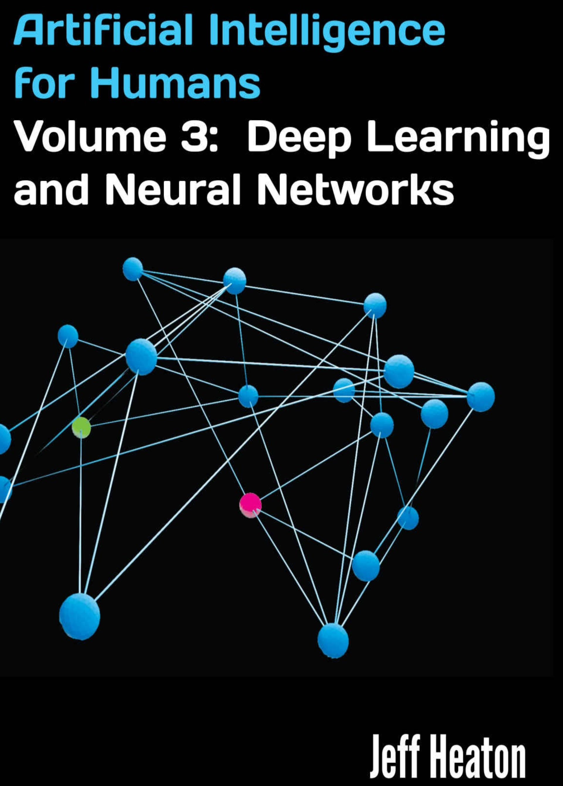
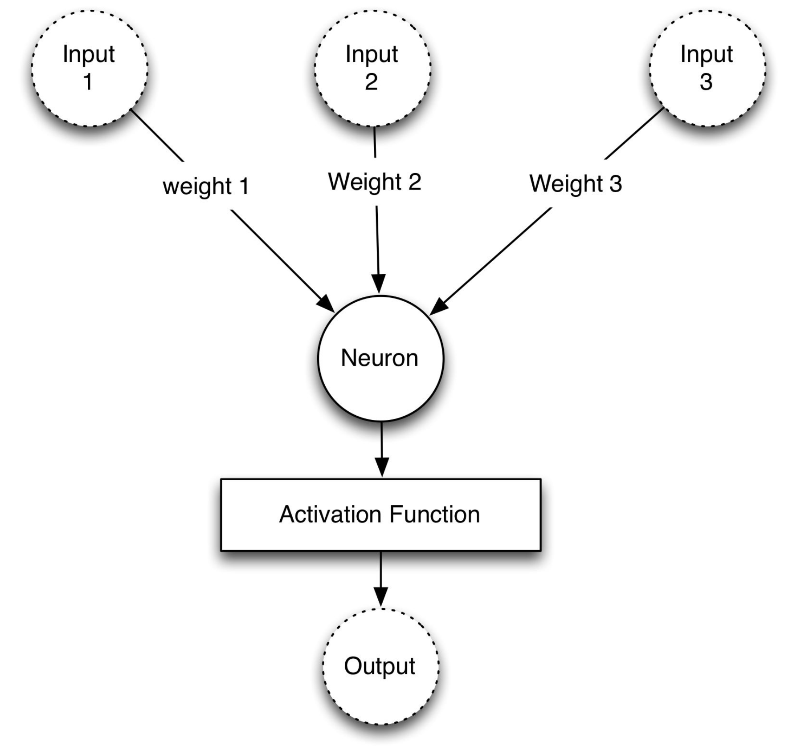
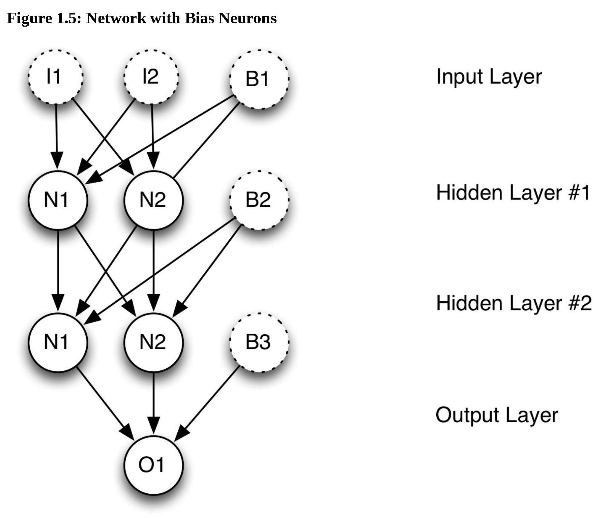
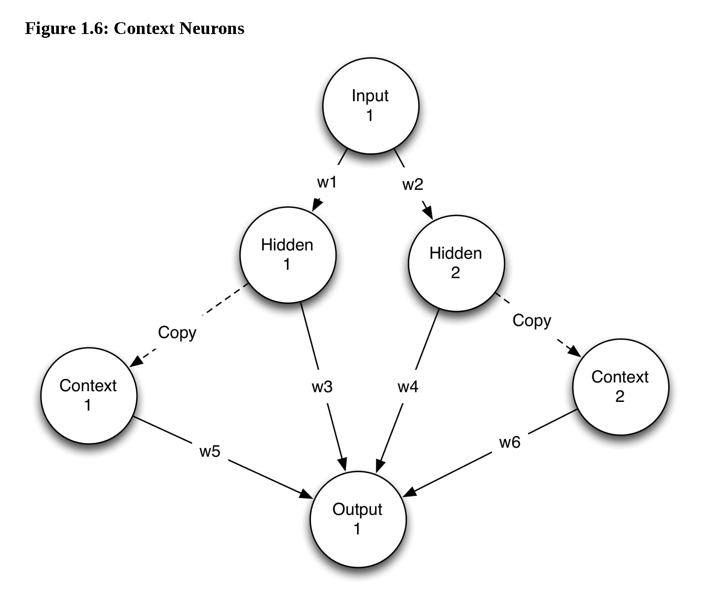

| ZotWeb | book | |
| Src Url | [[Heaton]] (2013) | |
undefined

====================
Citer: (Heaton, 2013)
FTag: Heaton-2013
APA7: Heaton, J. (2013). Deep learning and neural networks. Heaton Research, Inc.
---------------------------------------------------
Jeff Heaton, PhD, is a computer scientist that specializes in data science and artificial intelligence. Specializing in Python, R, Java and C#, he is an open source contributor and author of more than ten books. His areas of expertise include predictive modeling, data mining, big data, business intelligence, and artificial intelligence. Jeff holds a Master's Degree in Information Management from Washington University and a PhD in computer science from Nova Southeastern University in computer science. He is the lead developer for the Encog Machine Learning Framework open source project, a senior member of IEEE, and a fellow of the Life Management Institute (FLMI). --This text refers to the paperback edition.
http://chat.afelia.jgwill.com:3012/t/200927120948#msg\_1\_id
Code Repositories
GitHub repository: https://github.com/jeffheaton/aifh
Neural networks consist of layers of similar neurons. Most have at least an input layer and an output layer.

Schema of a Neuron
Programmers add bias neurons to neural networks to help them learn patterns.

Context neurons are used in recurrent neural networks. This type of neuron allows the neural network to maintain state.
